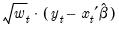

To perform WLS in EViews, open the equation estimation dialog and select a method that supports WLS such as then click on the tab. (You should note that weighted estimation is not offered in equations containing ARMA specifications, nor is it available for some equation methods, such as those estimated with ARCH, binary, count, censored and truncated, or ordered discrete choice techniques.)
You will use the three parts of the section of the tab to specify your weights.
The dropdown is used to specify the form in which the weight data are provided. If, for example, your weight series VARWGT contains values proportional to the conditional variance, you should select . Alternately, if your series INVARWGT contains the values proportional to the inverse of the standard deviation of the residuals you should choose
Lastly, you should choose a scaling method for the weights. There are three choices: , , and (in some cases) . If you select , EViews will, prior to use, scale the weights so that the

sum to

. The specification scales the weights so the square roots of the

sum to

. (The latter square root scaling, which offers backward compatibility to EViews 6 and earlier, was originally introduced in an effort to make the weighted residuals  comparable to the unweighted residuals.) Note that the EViews default method is only available if you select as weighting .
Click on the tab, and fill out the section as depicted here. We select as our , and specify “1/SIGMA” for our . Lastly, we select as our method.
Click on to estimate the specified equation. The results are given by:
The bottom portion of the output displays two sets of statistics. The show statistics corresponding to the actual estimated equation. For purposes of discussion, there are two types of summary statistics: those that are (generally) invariant to the scaling of the weights, and those that vary with the weight scale.
Lastly, EViews reports a set of . As the name suggests, these are statistics computed using the unweighted data and the WLS coefficients.


 . The presence of heteroskedasticity does not alter the bias or consistency properties of ordinary least squares estimates, but OLS is no longer efficient and conventional estimates of the coefficient standard errors are not valid.
. The presence of heteroskedasticity does not alter the bias or consistency properties of ordinary least squares estimates, but OLS is no longer efficient and conventional estimates of the coefficient standard errors are not valid. are known up to a positive scale factor, you may use weighted least squares (WLS) to obtain efficient estimates that support valid inference. Specifically, if
are known up to a positive scale factor, you may use weighted least squares (WLS) to obtain efficient estimates that support valid inference. Specifically, if minimizes the weighted sum-of-squared residuals:
minimizes the weighted sum-of-squared residuals: -dimensional vector of parameters
-dimensional vector of parameters  , where the weights are proportional to the inverse conditional variances. Equivalently, you may estimate the regression of the square-root weighted transformed data on the transformed
, where the weights are proportional to the inverse conditional variances. Equivalently, you may estimate the regression of the square-root weighted transformed data on the transformed  .
. be a diagonal matrix containing the scaled
be a diagonal matrix containing the scaled  along the diagonal and zeroes elsewhere, and let
along the diagonal and zeroes elsewhere, and let  and
and  be the matrices associated with
be the matrices associated with  and
and  . The WLS estimator may be written,
. The WLS estimator may be written, and . For example, the mean of the dependent variable is computed as , and the sum-of-squared residuals is given by . These values should not be compared across equations estimated using different weight scaling.
and . For example, the mean of the dependent variable is computed as , and the sum-of-squared residuals is given by . These values should not be compared across equations estimated using different weight scaling.